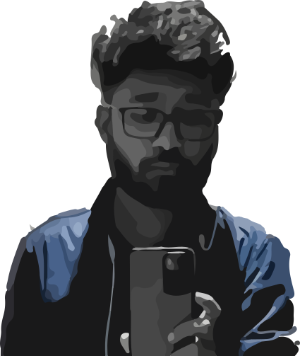

Vishul Sinha
Hello, I'm Vishul Sinha, a passionate web designer and developer with expertise in Next.js, TypeScript, HTML, CSS, JavaScript, Three.js, GSAP, Figma, and React. I take pride in crafting captivating digital experiences that blend creativity and functionality seamlessly. Through my portfolio, you'll discover a range of exciting projects showcasing my versatility, attention to detail, and dedication to creating outstanding user experiences. Let's collaborate and bring your visions to life!
The website aims at teaching people more about the planets in our solar system in a fun and engaging way I designed and developed this website from scratch, from its wireframe to it's complete code Features include - Modern minimal UI inspired from games, 3D models of the Planets made using WEB GL(Three JS), Responsive website, Easy to navigate
A Todo app that syncs your data across all the devices Frontend developed using HTML CSS and JavaScript, Backend developed with mongoDb, expressJS and NodeJS As a designer and developer, I ensured that the website looks good and aesthetic to the eyes using javascript libraries such as ThreeJS, GSAP, SwiperJS, TooltipJS and ToastifyJS Both backend and frontend and deploy on different platforms so I have ensured that CORS (cross origin resource sharing) was enabled The app used token based authentication system and the password stored inside is properly encrypted using bcrypt
A landing page made as an assignment for a project copying their figma design Uses the power of next JS, server side components and client side components to improve the performance Code written in typescript with two backend APIs to send email addresses and store them in mongoDb database Includes SVG animation and fully responsive design Uses GSAP for animations